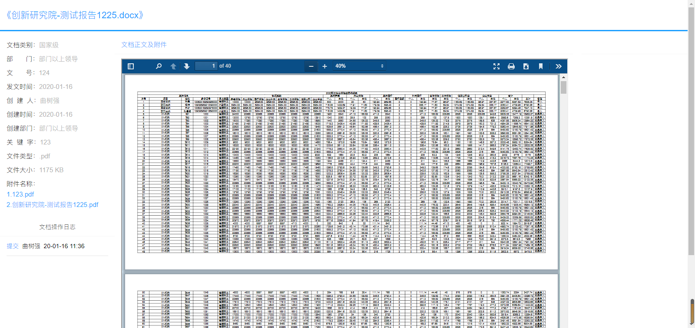

最近做的几个的项目里，都涉及到了很多关于文档的操作，比如word转pdf，excel转pdf，excel导入导出这些操作，不知道大家在做这些功能的时候是什么感觉，给我的感觉就是，这些功能都不困难，现成的代码也很多，可以拿来就用，但效率，通用性，便利性等不是很好。
比如excel相关的操作，我以前是常用NPOI这个库，这个库可以说是在excel和word文档操作方面的神器，免费，开源，而且你不需要在操作的环境下安装office，可以避免版权问题，还有重要的一点是，这个库是国人开发的，文档也很齐全，2019年初的时候，NPOI也宣布支持.net core了，所以活力指数还是相当高的。相信相当多的同学对它已经很熟悉了，如果我们的场景里只是文档操作，excel导入导出，那么，有NPOI就足够了，当然还有很多优秀的插件，就不多说了。
但当你遇到的场景里，除了以上操作，还多出了word转pdf，excel转pdf的时候，就又需要其他的工具来满足，当然如果你牛逼到可以自己造轮子，那小弟佩服！但绝大多数同学肯定不会这么干，即便是有能力也不太可能，一是成本太高，不论是时间成本还是人力成本，二是现有的解决方案足够优秀，且有专们的团队维护，无需自造。
到这里，轮到我们的主角登场了，aspose套件。
提前声明一下，这套组件，并不是免费的！而且收费价格颇高！但是呢…我们还是有办法用到它的…咳咳…就像我们总能用到windows,office一样…明白了吗？我这里呢只分享解决方案，至于其他的…
好了，因为aspose是一个收费组件，所以，在使用的时候，是需要授权的，授权的方法呢，我就不多说了，官方的非官方的文档都有https://www.aspose.com/。
直接来看业务场景吧。
我遇到的业务需求是：
1.提供pdf文件上传的接口，
2.并可以自动将word，excel文件转换成pdf,
3.高效率的导入大数据量的excel文件到系统，并支持导出操作
总结一下，主要就是两点，一是word，exce转pdf，二是excel的导入导出。
但客户专门提到了效率，excel导入导出一定要高效，文档的转换虽然没提，但也是要保证高效的，
那么这几点，都可以借助aspose组件来完成。
先来看转换
在使用aspose之前，将word转换成pdf我是这么做的
1 | public static bool WordToPDF(string sourcePath) |
那么这么做的问题就是，首先得依赖office组件，就是你的环境下得装office，其次，这样生成出来的pdf会很大，比如你原来的word文档可能只有2M，通过这种方式转换的pdf最终可能达到7,8M，而且效率很低，很快就被否掉了。
再来看下引入aspose之后的做法
1 | public static bool WordToPDF2(string sourcePath) |
首先代码行数上，就少了许多，而且，你们不觉得这个太简单了吗，简直就是拿来直接用，而且效果也非常好，看下页面效果和转换后的文件对比

上面是word转pdf再来看下excel转pdf
1 | public static bool ExcelToPdf(string sourcePath) |
代码也不多，再看下转换后的效果
再看一下文件打开后的效果

至此，转换的部分就介绍完了，再来看下导入导出的部分。
其实NPOI的导入导出已经很优秀了，这里aspose就不拼效率了，主要是拼通用性，一套组件，到处使用，当然效率也是极好的。
先来看下导出的核心代码
1 | public static void DataTable2ExcelAsp(DataTable dt, TableCell[] header, string fileName, Dictionary<int, int> mergeCellNums, int? mergeKey, bool is_sum=false) |
额，这段代码没有整理，略显凌乱，也是为了保证功能一体化，可以看到，aspose在处理excel时的操作非常简单，这里我把主要的几行代码在摘一下
1 | //将画好的表格转成流，然后定义好来源； |
1 | //定义单元格格式 |
这里呢，为了展示aspose效率之强大，我放一个视频演示，功能是按照不同的类别将结果导出到excel，目前我的测试数据是3900多条，然后分为78个组，导出到78个excel文件中，看一下效果
然后再看一下导入
导入其实很简单，只要我们把excel的数据读取到，后续的操作就是根据业务来了，看一下主要的代码吧
1 | //读取excel文件 |
来看下执行效果，我导入一个测试excel表，有1991条数据，10M左右
可以看到，视频中进度条反复了几次，其中只有第一次就是才是读取的进度，非常快，后边的就都是业务处理的进度了与aspose插件无关。
好了，今天就到这。